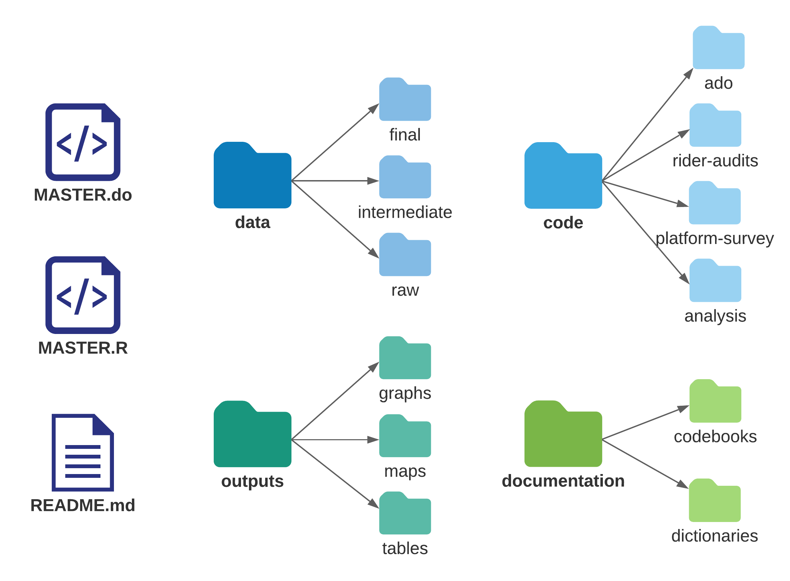

Chapter 2 Setting the stage for effective and efficient collaboration
In order to conduct effective data work in a team environment, researchers need to determine the structure of the workflow in advance. Preparation for collaborative data work begins long before data are acquired. It involves planning both software tools and collaboration platforms for the team and knowing what types of data will be acquired, whether the data will require special handling because of size or privacy considerations, which data sets and outputs will be needed at the end of the process, and how all data files and versions will stay organized throughout. It is important to plan data workflows in advance because changing software or protocols halfway through a project is costly and time-consuming. Seemingly small decisions such as file-sharing services, folder structures, and filenames can be extremely painful to alter down the line.
This chapter provides guidance on setting up an effective environment for collaborative data work, structuring data work to be well organized and clearly documented, and setting up processes to handle confidential data securely. The first section outlines how to set up a working environment to collaborate effectively with others on technical tasks and how to document tasks and decisions. The second section discusses how to organize code and data so that others will be able to understand and interact with them easily. The third section provides guidelines for ensuring privacy and security when working with confidential data. Box 2.1 summarizes the most important points, lists the responsibilities of different members of the research team, and provides a list of key tools and resources for implementing the recommended practices.
BOX 2.1 SUMMARY: SETTING THE STAGE FOR EFFECTIVE AND EFFICIENT COLLABORATION
The technical environment for data work needs to be established at the start of a research project. Agreeing on software choices, code standards and data structure, and data security protocols will prepare the team to implement technical tasks successfully, safely, and efficiently throughout the project life cycle. Consider the following.
- Technical collaboration environment. All software and workflows need to be standardized and interoperable across the team regardless of the different hardware used:
- Secure all physical computing hardware through encryption and password protection. If specialized or more powerful hardware is required, initiate requests for access, purchase orders, or other processes now.
- Agree on tools for collaboration and documentation. Key conversations and decisions need to be archived and organized outside of instant messages and email conversations.
- Decide which programming languages and environments to use. Setting up a comfortable, modern digital work environment takes time, but it is time well spent.
- Organization of code and data. The team needs to agree on where and how code files and databases will be stored, down to the level of the folder structure:
- Set up a standardized and scalable folder structure. This structure should give all documents an unambiguous location, and the location and naming of files should describe their purpose and function and be intuitive to all team members.
- Set up a backup and version-control system appropriate for each type of file. Such a system will ensure that information cannot be lost and that all team members understand how to interoperate and collaborate.
- Set up master script files. These master files will be used to structure and execute the code.
- Information security measures and ethical frameworks. The team needs to understand why such measures are needed and to adopt practices for ensuring that data are secure and research subjects’ information is protected:
- Formally request and obtain approval from legal entities governing research in all relevant jurisdictions.
- Understand how to respect the rights and dignity of research subjects, and plan for how to establish informed consent from individuals or groups participating in the research.
- Adopt standardized digital security practices, including proper encryption of all confidential information, at rest and in transit, both among the team and with external partners.
Key responsibilities for task team leaders and principal investigators
- Support the acquisition and maintenance of required computing hardware and software, coordinating with procurement, information security, and information technology teams as necessary.
- Make final decisions regarding code languages and environments.
- Discuss and agree upon an appropriate project-wide digital organization strategy.
- Institute and communicate best practices in accordance with legal, ethical, and security obligations.
Key responsibilities for research assistants
- Communicate technical needs clearly with task team leaders, principal investigators, and relevant service providers.
- Implement a consistent digital organization strategy, and flag issues pertaining to task management, documentation, or materials storage, if they arise.
- Support project compliance with ethical, legal, and security obligations; and flag concerns for task team leaders and principal investigators.
Key Resources
- Research ethics in pillar 1 of the DIME Research Standards, at https://github.com/worldbank/dime-standards
- DIME GitHub resources at https://github.com/worldbank/dime-github-trainings
- Data security in pillar 4 of the DIME Research Standards, at https://github.com/worldbank/dime-standards
- Publication guidelines in pillar 5 of the DIME Research Standards, at https://github.com/worldbank/dime-standards
Preparing a collaborative work environment
This section introduces core concepts and tools for organizing data work in an efficient, collaborative, and reproducible manner. Some of these skills may seem elementary, but thinking about simple details from a workflow perspective can make marginal daily improvements that add up to substantial gains over the course of multiple years and projects. Together, these processes form a collaborative workflow that will greatly accelerate the team’s ability to complete tasks on all of its projects.
Teams often develop workflows in an ad hoc fashion, solving new challenges as they arise. Adaptation is good, of course, but some tasks exist on every project, and it is more efficient to agree on the corresponding workflow in advance. For example, every project requires research documentation, a file-naming convention, directory organization, coding standards, version control, and code review. These tasks are common to almost every project, and their solutions translate well between projects. Therefore, thinking in advance about the best way to perform these tasks brings greater efficiencies than throwing together a solution when the task arises. Box 2.2 provides an example of these types of decisions made for the Demand for Safe Spaces project. This section outlines the main points to discuss within the team and suggests best-practice solutions for them.
BOX 2.2 PREPARING A COLLABORATIVE WORK ENVIRONMENT: A CASE STUDY FROM THE DEMAND FOR SAFE SPACES PROJECT
The following are a few highlights demonstrating how the Demand for Safe Spaces team organized the work environment for effective collaboration:
- The data work for the project was done through a private GitHub repository hosted in the World Bank organization account.
- GitHub Issues was used to document research decisions and provide feedback. Even the principal investigators for the study, who did not participate directly in coding, used Github Issues to review code and outputs and to create a record of broader discussions.
- Stata was adopted as the primary software for data analysis, because it was the software that all team members had in common at the start of the project. At a later stage of the project, R code was developed specifically to create maps. The R portion of the code was developed independently because it used different data sets and created separate outputs. The team used two separate master scripts, one for the Stata code and one for the R code.
- Team members shared a synchronized folder (using Dropbox), which included the de-identified data and project documentation such as survey instruments and enumerator training manuals.
Setting up a computer for data work
First things first: almost all data work will be done on a computer, so it needs
to be set up for success. The operating system should be fully updated, be in
good working order, and use a password-protected login. However, password
protection is not sufficient if the computer stores data that are not public.
Encryption is essential for sufficient protection and is covered later in this
chapter. The computer has to be backed up to prevent information loss
(https://dimewiki.worldbank.org/Data_Storage). The 3-2-1 rule is highly
recommended: maintain three copies of all original or irreplaceable data, with
data stored on at least two onsite hardware devices and in one offsite location.
Chapter 4 provides a protocol for implementing this rule. It is important to
know how to get the absolute file path for any given file. On macOS the file
path will be something like /users/username/git/project/...; on Windows it
will be C:/users/username/git/project/.... Absolute file paths are an obstacle
to collaboration unless they are dynamic absolute file paths. In a dynamic
absolute file path, the relative project path, /git/project/... in the
examples above, is added to the user-specific root path for each user,
/users/username or C:/users/username, generating an absolute file path
unique to each user. Master scripts, which are introduced later in this chapter,
implement this process seamlessly. Dynamic absolute file paths, starting from
the file system root, are the best way to ensure that files are read and written
correctly when multiple users work on the same project across many different
platforms, operating systems, and devices. In some contexts—for example, some
cloud environments—relative file paths must be used, but in all other contexts
dynamic absolute file paths are recommended.
It is recommended to follow standardized naming conventions 15 in folder names and
filenames. Whenever possible, use only the 26 English letters, numbers, dashes
(-), and underscores (_). Give preference to lowercase letters and avoid
spaces, which can cause problems when transferred to others. Forward slashes
(/) must always be used in file paths to represent folder or directory
structures when typed in code, just like in internet addresses. It is good
practice to do this even when using a Windows machine, where both forward and
backward slashes are allowed; using a backward slash will break the code if
anyone tries to run it on a macOS or Linux machine. Making the structure and
naming of directories a core part of the workflow is very important, because
otherwise it will be impossible to transfer reliable instructions for
replicating or carrying out the analytical work.
Most teams use some kind of file-sharing software. The exact services used will depend on the tasks, but in general there are several approaches to file sharing; the three discussed here are the most common. File syncing is the most familiar method and is implemented by software like OneDrive, Dropbox, or Box. Syncing software forces everyone to have the same version of every file at the same time, which makes simultaneous editing difficult but other tasks easier. Distributed version control is another method, commonly implemented through systems like GitHub, GitLab, and Bitbucket that interact with Git.16 Distributed version control allows everyone to access different versions of a file at the same time. It is optimized only for specific types of files (for example, any type of code file). Finally, server storage is the least-common method, because there is only one version of the materials and simultaneous access must be regulated carefully. Server storage ensures that everyone has access to exactly the same files and environment, and it also enables high-powered computing processes for large, complex data.
All three file-sharing methods are used for collaborative workflows, and it is important to review the types of data work that will be done and to plan which types of files will live in which types of sharing services. These services are, in general, not interoperable, meaning that version-controlled files cannot generally be stored inside a syncing service, or vice versa, and files cannot be shifted between services without losing historical information. Therefore, choosing the correct file-sharing service for each of the team’s needs at the outset is essential. Teams within DIME typically use file syncing for all project administrative files and data, version control with Git for code, and server storage for backup and large scale computations when needed.
Establishing effective documentation practices
Once the technical and sharing workspace is set up, the next task is to decide how the team is going to communicate. The first habit that many teams need to break is using instant communication for management and documentation. Email is, simply put, not a system. It is not a system for anything. Neither are instant messaging apps like WhatsApp. Instant messaging tools are developed for communicating “now,” and they do it well. They are not structured to manage group membership, to present the same information across a group of people, or to remind individuals when old information becomes relevant. They are not structured to allow people to collaborate over a long period of time or to review old discussions. It is therefore easy to miss or lose communications from the past when they have relevance in the present. Everything with future relevance that is communicated over email or any other instant medium—for example, decisions about research design—should immediately be recorded in a system designed to keep permanent records. These systems are called collaboration tools, and several are very useful.
Good collaboration tools are workflow-oriented systems that allow the team to create and assign tasks, carry out discussions related to single tasks, track progress across time, and quickly see the overall status of the project. They are web-based so that everyone on the team can access them simultaneously and have ongoing discussions about tasks and processes. Such systems link communications to specific tasks so that related decisions are permanently recorded and easy to find in the future when questions about that task arise. Choosing the right tool for the team’s needs is essential to designing an effective workflow. What is important is to choose a system and commit to using it, so that decisions, discussions, and tasks are easily reviewable long after they are completed.
GitHub and Dropbox Paper are popular, free collaboration tools that meet these criteria, and DIME Analytics has used both of them. However, any specific list of software will quickly become outdated. Different collaboration tools can be used for different types of tasks. DIME Analytics, for example, uses GitHub for code-related tasks and Dropbox Paper for managerial tasks. GitHub creates incentives for writing down why changes to the code were made in response to specific discussions as they are completed, creating naturally documented code. Tasks in GitHub Issues can be tied clearly to file versions. Dropbox Paper provides a clean interface, with task notifications, assignments, and deadlines, and is very intuitive for people with nontechnical backgrounds. Therefore, it is a useful tool for managing tasks not related to code.
Setting up a code environment
Taking time early in a project to choose a programming language and setting up a productive code environment for that language will make the work significantly easier. Setting up a productive code environment means ensuring that the programming language and all other software that the code requires will run smoothly on all of the hardware used. It also gives the team a productive way to interact with code and gives the code a seamless method for accessing the data.
It is difficult and costly to switch programming languages halfway through a project, so it is important to consider early on the various types of software that the team will use, taking into account the technical abilities of team members, what type of internet access the software will need, the type of data that will be needed, and the level of security required. Big data sets require additional infrastructure and may overburden tools commonly used for small data sets. The cost of licenses, the time to learn new tools, and the stability of the tools also are considerations. Few software choices are strictly right or wrong; what is important is to plan in advance and to understand how the chosen tools will interact with the workflow.
One option is to hold the code environment constant over the life cycle of a
single project. However, this means that different projects will inevitably have
different code environments and researchers working on multiple projects are
likely to have to work in several slightly different code environments. Each
successive project’s code environment will be better than the last, but it is
rarely justified to undertake the costly process of migrating an ongoing project
into a new code environment. Code environments should be documented as precisely
as possible. The specific version number of the programming languages and the
individual packages used should be referenced or maintained so that they can be
reproduced going forward, even if different releases contain changes that would
break the code or change the results. DIME Analytics developed the command
ieboilstart17 in the ietoolkit package to
support version and settings stability in Stata. If a project requires more than
one programming language—for example, if data are analyzed in one language but
the results are visualized in another—then the division between the two should
be as clear as possible. All tasks done in one language need to be completed
before the tasks in the other language are completed. Frequently swapping back
and forth between languages is a reproducibility nightmare.
Next, it is important to think about how and where code is written and executed. This book is intended to be agnostic to the size or origin of the data, but it assumes broadly that researchers are using one of the two most popular statistical software packages: R or Stata. (If using another language, like Python, many of the same principles apply, but the specifics will be different.) Most of the code work will be done in a code editor. For working in R, RStudio (https://www.rstudio.com) is the typical choice. For Stata, the built-in do-file editor is the most widely adopted code editor. However, it might be useful to consider using an external editor for R or Stata code. These editors offer great accessibility and quality features. For example, they can access an entire directory—rather than a single file— which provides directory-level views and file management actions, such as folder management, Git integration, and simultaneous work with other types of files, without leaving the editor. Using an external editor can also be preferable because an external editor will not crash if execution of the code causes the statistical software to crash. Finally, it is often possible to use the same external editor for all programming languages used, so any customization done in the code editor of choice will improve productivity across all of the coding work.
Organizing code and data for replicable research
This handbook assumes that the analytical work is done through code with the ambition that all processes will be documented and replicable. Although it is possible to interact with some statistical software through the user interface without writing any code, doing so is strongly discouraged. Writing code creates a record of every task performed. It also prevents direct interaction with the data files, which could lead to nonreproducible steps. It is possible to do some exploratory tasks by point-and-click or typing directly into the console, but anything that is included in a research output must be coded in an organized fashion so that it is possible to release the exact code that produces the final results—up to and including individual statistics in text. Still, organizing code and data into files and folders is not a trivial task. What is intuitive to one person rarely comes naturally to another, and searching for files and folders is the least favorite task of most researchers. This section provides basic tips on managing the folders that store a project’s data work.
Maintaining an organized file structure for data work is the best way to ensure that the entire team and others are able to edit and replicate the work easily in the future. It also ensures that automated processes from code and scripting tools are able to interact well, regardless of who created them. File organization makes data work easier as well as more transparent and facilitates integration with tools like version-control systems that aim to cut down on the number of repeated tasks that have to be performed. It is worth thinking in advance about how to store, name, and organize the different types of files with which the team will be working so that there is no confusion down the line and everyone has the same expectations.
Organizing files and folders
Once a research project begins, the number of scripts, data sets, and outputs that need to be managed will grow very quickly. This situation can get out of hand just as quickly, so it is important to organize the data work and follow best practices from the beginning. It is necessary for the team to agree on a specific directory structure and to set it up at the beginning of the project. It also is necessary to agree on a file-naming convention, which will facilitate finding project files and ensure that all team members can easily run the same code.
To support consistent folder organization, DIME Analytics created
iefolder18
as a part of the ietoolkit package. Box 2.3 describes the folder structure of
the Demand for Safe Spaces data work. This Stata command sets up a
prestandardized folder structure for what is called the DataWork folder.19
The DataWork folder includes folders for all of the steps in a typical project.
Because each project will always have unique needs, the structure is easy to
adapt. Having a universally standardized folder structure across the entire
portfolio of projects means that everyone can move easily between projects
without having to spend time understanding a new organization of files and
folders.
BOX 2.3 ORGANIZING FILES AND FOLDERS: A CASE STUDY FROM THE DEMAND FOR SAFE SPACES PROJECT
Figure B2.3.1 illustrates the folder structure of the Demand for Safe Spaces
data work. This project started before the iefolder structure was created and
so differs from the current guidelines. Changing folder organization midway
through a project is never recommended. Folder organization requires planning
ahead and agreeing with the whole team on the best structure to follow.
FIGURE B2.3.1 Folder structure of the Demand for Safe Spaces data work

Source: DIME (Development Impact Evaluation), World Bank.
The root folder for the study’s data work included two master scripts (one for
Stata and one R, which can be run independently), a README.md file, and four
subfolders: data, code, documentation, and outputs. The folder structure was
identical in GitHub and Dropbox, but the files present in each of them differed.
All of the code, raw outputs (such as .tex table fragments and .png images),
and plain-text documentation were stored in GitHub. All of the data sets, .pdf
outputs, and documentation in Word and Excel were stored in Dropbox. When data
processing was completed, binary files in the “Documentation” folder that were
accessed by the code, such as iecodebook and ieduplicates spreadsheets, were
moved to GitHub to ensure that the repository was complete from a
reproducibility perspective.
In the absence of a standard file structure across projects, iefolder is an
easy template from which to start. The command creates a “DataWork” folder at
the project level and, within that folder, creates a standardized directory
structure for each data source or survey round. Within each subdirectory,
iefolder creates folders for raw encrypted data, raw de-identified data,
cleaned data, final data, outputs, and documentation. It creates a parallel
folder structure for the code files that move data through this progression and
for the final analytical outputs. The ietoolkit package also includes the
iegitaddmd20 command, which places README.md
placeholder files in folders. Because these placeholder files are written in a
plain-text language called Markdown, they also provide an easy way to document
the contents of every folder in the structure.
The DataWork folder may be created either inside an existing project folder or as a separate root folder. It is advisable to keep project management materials (such as contracts, terms of reference, briefs, and other administrative or management work) separate from the DataWork folder structure. Project management materials should be maintained in a sync system like Dropbox, whereas the code folder should be maintained in a version-control system like Git. However, a version-control folder should never be stored in a sync folder that is shared with other people. Combining these two types of collaboration tools almost always creates undesirable functionalities.
Establishing common file formats
Each task in the research workflow has specific inputs and outputs that feed
into one another. It is common to create incompatibilities, particularly when
different people in a team perform different tasks. For example, if the
principal investigators are writing a paper using LaTeX, exporting tables from
statistical software into a .csv format will break the workflow. Therefore, it
is important for the team to agree on what tools will be used for what tasks and
where inputs and outputs will be stored, before creating them. Taking into
account ease of use for different team members and keeping in mind that learning
how to use a new tool may require some up-front investment of time will pay off
as the project advances.
Knowing how code outputs will be used will help to determine the best format for
exporting them. It is typically possible to use the same software to save
figures into various formats, such as .eps, .png, .pdf and .jpg.
However, the decision to use Office suite software such as Word and PowerPoint
(or free alternatives) instead of LaTeX or another plain-text format will
influence how the code should be written, because this choice often implies the
use of a particular format. This decision will also affect which version-control
systems the team can use.
Using version control
Using a version-control system is recommended to maintain control of the file
history and functionality. A good version-control system tracks who edited each
file and when, allows users to revert to previous versions, and provides a
protocol for avoiding conflicting versions. Version control is important, for
example, if the team needs to find the exact version of a presentation that was
delivered to a donor or to understand why the significance level of estimates
has changed. Everyone who has ever encountered a file named something like
final_report_v5_LJK_KLE_jun15.docx can appreciate how useful such a system can
be.
Most syncing services offer some kind of rudimentary version control; these services are usually able to manage changes to binary files 21 without needing to rely on dreaded filename-based versioning conventions. For code files, however, a more detailed version-control system is usually desirable. Git is the recommended version-control system for all data work. Git documents the changes made to all files, but works best with plain-text files. Plain-text files include all code files, most raw outputs, and written outputs that use code languages, such as LaTeX files and many dynamic documents. Git tracks all of the changes made to each plain-text file and makes it possible to return to previous versions without losing information on the changes made. It also makes it possible to work on multiple parallel versions of a file, eliminating the risk that someone who is trying something new will break code for other team members.
Writing code that others can read
Good code is easily understood and run by others. This section discusses a few crucial steps to code organization. They all come from the principle that code is an output in and of itself, not just a means to an end, and should be easy to read. Box 2.4 provides a template for a master script 22 do-file in Stata, illustrating the code elements, organization, and structure required.
BOX 2.4 DIME MASTER DO-FILE TEMPLATE
/*******************************************************************************
* TEMPLATE MASTER DO-FILE *
********************************************************************************
* *
* PURPOSE: Reproduce all data work, map inputs and outputs, *
* facilitate collaboration *
* *
* OUTLINE: PART 1: Set standard settings and install packages *
* PART 2: Prepare folder paths and define programs *
* PART 3: Run do-files *
* *
********************************************************************************
PART 1: Install user-written packages and harmonize settings
********************************************************************************/
local user_commands ietoolkit iefieldkit //Add required user-written commands
foreach command of local user_commands {
cap which `command'
if _rc == 111 ssc install `command'
}
*Harmonize settings across users as much as possible
ieboilstart, v(13.1)
`r(version)'
/*******************************************************************************
PART 2: Prepare folder paths and define programs
*******************************************************************************/
* Research Assistant folder paths
if "`c(username)'" == "ResearchAssistant" {
global github "C:/Users/RA/Documents/GitHub/d4di/DataWork"
global dropbox "C:/Users/RA/Dropbox/d4di/DataWork"
global encrypted "M:/DataWork/EncryptedData"
}
* Baseline folder globals
global bl_encrypt "${encrypted}/Round Baseline Encrypted"
global bl_dt "${dropbox}/Baseline/DataSets"
global bl_doc "${dropbox}/Baseline/Documentation"
global bl_do "${github}/Baseline/Dofiles"
global bl_out "${github}/Baseline/Output"
/*******************************************************************************
PART 3: Run do-files
*******************************************************************************/
/*------------------------------------------------------------------------------
PART 3.1: De-identify baseline data
REQUIRES: ${bl_encrypt}/Raw Identified Data/D4DI_baseline_raw_identified.dta
CREATES: ${bl_dt}/Raw Deidentified/D4DI_baseline_raw_deidentified.dta
IDS VAR: hhid
----------------------------------------------------------------------------- */
*Change the 0 to 1 to run the baseline de-identification do-file
if (0) do "${bl_do}/Cleaning/deidentify.do"
/*------------------------------------------------------------------------------
PART 3.2: Clean baseline data
REQUIRES: ${bl_dt}/Raw Deidentified/D4DI_baseline_raw_deidentified.dta
CREATES: ${bl_dt}/Final/D4DI_baseline_clean.dta
${bl_doc}/Codebook baseline.xlsx
IDS VAR: hhid
----------------------------------------------------------------------------- */
*Change the 0 to 1 to run the baseline cleaning do-file
if (0) do "${bl_do}/Cleaning/cleaning.do"
/*-----------------------------------------------------------------------------
PART 3.3: Construct income indicators
REQUIRES: ${bl_dt}/Final/D4DI_baseline_clean.dta
CREATES: ${bl_out}/Raw/D4DI_baseline_income_distribution.png
${bl_dt}/Intermediate/D4DI_baseline_constructed_income.dta
IDS VAR: hhid
----------------------------------------------------------------------------- */
*Change the 0 to 1 to run the baseline variable construction do-file
if (0) do "${bl_do}/Construct/construct_income.do"
***************************************************************** End of do-fileTo access this code in do-file format, visit the GitHub repository at https://github.com/worldbank/dime-data-handbook/tree/main/code.
To be readable, code must be well documented. This process begins by adding a code header to every file. A code header is a long comment 23 that details the functionality of the entire script; refer to lines 5–10 in the template master do-file in box 2.4. The header should include simple information such as the purpose of the script and the name of the person who wrote it. If using version-control software, the software will record the last time a modification was made and the person who most recently edited it. Otherwise, this information should be included in the header. It is essential to track the inputs and outputs of the script as well as the uniquely identifying variable; refer to lines 49–52 in the template master do-file in box 2.4. When trying to determine which code creates which data set, this tracking will be very helpful. Although there are other ways to document decisions related to creating code, the information relevant to understanding the code should always be written in the code file.
Two types of comments should be included in the script itself. The first type of comment describes what is being done. Someone familiar with the language might find this information easy to understand from the code itself, if the code is clear, but reverse-engineering the code’s intent often requires a great deal of work. Describing the task in plain English (or whatever language the team uses to communicate) will make it easier for everyone to read and understand the code’s purpose. It can also help researchers to organize their own work and ensure that they are following logical steps. The second type of comment explains why the code is performing a task in a particular way. Writing code requires making a series of decisions that (it is hoped) make perfect sense at the time. These decisions are often highly specialized and may exploit a functionality that is not obvious or that others have not seen before. Well-commented code is, in and of itself, a great way to document the data work that someone can follow to understand everything from data-cleaning decisions that make the published data different from the original data to decisions on how indicators are constructed. In a couple of weeks, even the code writer probably will not remember the exact choices that were made. Documenting the precise processes in code is essential. See box 2.5 for examples of how comments can be used.
BOX 2.5 WRITING CODE THAT OTHERS CAN READ: A CASE STUDY FROM THE DEMAND FOR SAFE SPACES PROJECT
To ensure that all team members were able to read and understand data work easily, Demand for Safe Spaces code files had extensive comments. Comments typically took the form of “what–why”: what is this section of code doing, and why is it necessary? The following snippet from a data-cleaning do-file for one of the original data sets illustrates the use of comments:
********************************************************************************
* PART 1: Clean-up *
********************************************************************************
* Drop lines that only work after 8 PM
* no rides data is collected outside of rush hour
drop if inlist(substr(linha,1,4),"SCZP","JRIP")
* Drop circular honorio - not present in rides data
drop if substr(linha,1,3) == "HON"
* Adjust var formats - some missing observations are marked as "-",
* which causes Stata to read the variable as a string, not a number
foreach varAux of varlist boardings exits seatprob {
replace `varAux' = subinstr(`varAux',"-","",.) // remove dash character
replace `varAux' = strtrim(`varAux') // remove spaces
destring (`varAux'), replace // now convertible into a number
}
* Drop null station/line combinations
drop if exits == . & boardings == .For the complete do-file, visit the GitHub repository at https://git.io/Jtgev.
Code files should be stored in an easy-to-find location and named in a meaningful way. Breaking code into independently readable “chunks” is good practice for code organization. Each functional element should be written as a chunk that can run completely on its own. This step ensures that each component of code is independent and does not rely on a complex program state created by other chunks of code that are not obvious from the immediate context. One way to achieve this independence is by creating sections in the script to identify where a specific task is completed. RStudio makes it very easy to create sections and compiles them into an interactive script index.
In Stata, comments can be used to create section headers, but they are only
intended to make the reading easier and do not have any functionality. For
example, to find the line in the code where the directory is set, it is easier
to go straight to PART 2: Prepare folder paths and define programs than to
read line by line through the entire code (see line 27 in the template master
do-file in box 2.4). Since an index is not automated like in RStudio, it must be
created manually in the code header by copying and pasting section titles (see
lines 8–10 in the template master do-file in box 2.4). It is then possible to
add and navigate through the code using the search function in the code editor.
Stata code is harder to navigate because it is necessary to scroll through the
document; therefore, it is particularly important to avoid writing very long
scripts. In Stata at least, breaking code tasks into separate do-files is
recommended because there is no limit on the number of do-files, how detailed
their names can be, and no advantage to writing longer files. One reasonable
rule of thumb is not to write do-files that have more than 200 lines. This is an
arbitrary limit, just like the common practice of limiting code lines to 80
characters: it seems to be “enough but not too much” for most purposes.
Writing code that others can run
Bringing all of these smaller code files together is another purpose of the master script. A master script is the map of all of the project’s data work, which serves as a table of contents for the instructions that are coded. Anyone should be able to follow and reproduce all of the work from the original data to all outputs simply by running this single script. Someone external to the project who has the master script and all of the input data can (1) run all of the code and recreate all of the outputs, (2) understand generally what is being done at every step, and (3) see how code and outputs are related. All settings required to reproduce all outcomes should be established in the master script, including versions, folder paths, func- tions, and constants used throughout the project. Box 2.4 shows the DIME Analytics template for a Stata master do-file, but master scripts should be used for reproducibility no matter the programming language used.
A good habit is always to run code from the master script. Creating “section
switches” using macros or objects to runonly the codes related to a certain task
is always preferable to opening different scripts manually and running them in a
certain order (see the if (0) switches on lines 55, 65, and 75 in the template
master do-file in box 2.4 for one way to do this). Furthermore, running all
scripts related to a particular task through the master script whenever one of
them is edited helps to identify unintended consequences of the changes made.
For example, if the name of a variable created in one script changes, this
change may break another script that refers to this variable. But, unless both
scripts are run when the change is made, it may take time for the break to
happen; when it does, it may take time to understand what is causing an error.
The same applies to changes in data sets and results.
To link code, data, and outputs, the master script reflects the structure of the DataWork folder in code through globals (in Stata) or string scalars (in R); refer to lines 37–42 of the template master do-file in box 2.4. These coding shortcuts can refer to subfolders, and those folders can be refer- enced without repeatedly writing out their absolute file paths. Because the DataWork folder is shared by the whole team, its structure is the same in each team member’s computer. The only difference between machines is the path to the project root folders—that is, the highest-level shared folder. Depending on the software environment, there may be multiple root folders. In a typical DIME project, there is one Git root folder for the code, one sync software root folder for the de-identified data, and a third encryption software folder for the encrypted data.
This organization is reflected in the master script in such a way that the only
change necessary to run the entire code for a new team member is to change the
path to the project root folders to reflect the file system and username; refer
to lines 30–35 of the template master do-file. The code in the template master
file shows how folder structure is reflected in a master do-file. Because
writing and maintaining a master script can be challenging as a project grows,
an important feature of iefolder is to write submaster do-files and add to
them whenever new subfolders are created in the DataWork folder. See box 2.6 for
an example of the master do-file for the Demand for Safe Spaces project, which
was based on the DIME Analytics template and applied the best practices
discussed in this section.
BOX 2.6 WRITING CODE THAT OTHERS CAN RUN: A CASE STUDY FROM THE DEMAND FOR SAFE SPACES PROJECT
All code for the Demand for Safe Spaces study was organized to run from two master scripts, one Stata master script and one R master script. The master scripts were written such that any team member could run all project codes simply by changing the top-level directory. The following is a snippet of the Stata master do-file:
/*******************************************************************************
* Demand for "Safe Spaces": Avoiding Harassment and Stigma *
* MASTER DO-FILE *
********************************************************************************
PART 0: User inputs
PART 1: Prepare folder paths
PART 2: Load necessary packages
PART 3: Run selected code
********************************************************************************
* PART 0: USER INPUTS
*******************************************************************************/
ieboilstart, v(14.0) matsize(10000)
`r(version)'
// Set folder paths -----------------------------------------------------------
if inlist(c(username), "Luiza") {
global github "C:\Users\Documents\GitHub\rio-safe-space\Replication Package"
global onedrive "C:\Users\OneDrive - WBG\RJ - Vagao Rosa"
}
// Select sections to run ------------------------------------------------------
local packages 0 // Install user-written commands used in the project
local cleaning 0 // Run data cleaning
global encrypted 0 // Start from identified data
local construction 0 // Re-create analysis indicators
local mainresults 0 // Re-create analysis outputs
* Section omitted - see full code on https://github.com/worldbank/rio-safe-space
********************************************************************************
* PART 1: Prepare folder paths *
********************************************************************************
* Confidential folders
global encrypt "${onedrive}/data/raw-identified"
global encode "${onedrive}/dofiles/ado"
* Do-files
global do "${github}/dofiles"
global do_analysis "${do}/analysis"
global do_tables "${do_analysis}/paper/tables"
global do_graphs "${do_analysis}/paper/graphs"
* Data sets
global data "${github}/data"
global dt_final "${data}/final"
global dt_raw "${data}/raw"
global dt_int "${data}/intermediate"
* Documentation
global doc "${github}/documentation"
global doc_rider "${doc}/rider-audits"
global doc_platform "${doc}/platform-survey"
* Outputs
global out_git "${github}/outputs"
global out_tables "${out_git}/tables"
global out_graphs "${out_git}/graphs"
* Section omitted - see full code on https://github.com/worldbank/rio-safe-space
********************************************************************************
* PART 3: Run selected code *
********************************************************************************
if `cleaning' do "${do}/rider-audits/MASTER_rider_audits_data_prep.do"
if `construction' {
do "${do}/rider-audits/pooled/7_construct.do"
do "${do}/rider-audits/pooled/8_reconstruct_p3_assignment.do"
}
if `mainresults' do "${do_analysis}/paper/MASTER_paper_results.do"For the complete Stata master script, visit the GitHub repository at https://git.io/JtgeT. For the R master script, visit the GitHub repository at https://git.io/JtgeY.
In order to maintain well-documented and well-organized code, everyone on the team has to agree on a plan to review code as it is written. Researchers benefit from improving their own skills as they read other people’s code and from allowing others to read their code to catch errors and ambiguities. It is normal (and common) to make mistakes while writing code. Reading code again to organize and provide comments while preparing it to be reviewed will help to identify those mistakes. It is best to schedule a code review at regular intervals or when a single task is completed. Waiting a long time to review the code means that the code becomes too complex, and preparation and code review require more time and work, which is a common reason why this step is often skipped. Another important advantage of code review is that making sure that the code is running properly on other machines and that other people can read and understand the code are the easiest ways to prepare in advance for a smooth project handover or for release of the code to the general public.
Preparing to handle confidential data ethically
Most original data in a development research project include personally identifying information (PII)24. PII variables can include names, addresses, geolocations, email addresses, phone numbers, and bank accounts or other financial details. When working in a context or population that is small and specific or has extensive linkable data sources available to others, information like age and gender may be sufficient to disclose a person’s identify, even though those variables are not considered PII in general. The remainder of this section addresses the standards for research ethics25 that teams must follow when working with PII.
PII should be separated from the rest of the data at the earliest opportunity and stored in a separate, protected location. This step protects respondent privacy and simplifies workflows, because de-identified data sets do not need to be encrypted. If the PII is required for analysis, research teams must work with encrypted files through- out. There is no one-size-fits-all solution to determine what is PII, and research teams have to use careful judgment in each case to avoid statistical disclosure risk. Data privacy principles apply not only to the respondents providing the information but also to their household members or other individuals who are referenced in the data. In all cases involving PII, adhering to several core principles is essential. These principles include ethical approval, participant consent, data security, and participant privacy (for an example, see Baldwin, Muyengwa, and Mvukiyehe (2017)). Researchers based in the United States must become familiar with a set of governance standards known as “the Common Rule” (Bierer, Barnes, and Lynch (2017)). Researchers interacting with European institutions or persons must also become familiar with the General Data Protection Regulation (GDPR; at https://gdpr-info.eu), a set of regulations governing data ownership and privacy standards. No matter where the researcher is located or what the exact legal requirements are, similar core principles and practices will apply.
Seeking ethical approval
Most of the field research done in development involves human subjects26. Researchers ask people to trust them with personal information about themselves: where they live, how rich they are, whether they have committed or been victims of crimes, their names, their national identity numbers, and all sorts of other information. Personal data carry strict expectations about data storage and handling, and the research team is responsible for satisfying these expectations. Donors or employers most likely require researchers to hold a certification from a respected source.
Almost all such data collection and research activities will require the completion of some form of institutional review board (IRB)27 process. Most commonly this process consists of a formal application for approval of a specific protocol for consent, data collection, and data handling. Which IRB has authority over a project is not always apparent, particularly if participating institutions do not have their own IRB. It is customary to obtain approval from a university IRB where at least one principal investigator is affiliated; if work is being done in an international setting, approval from an appropriate local institution subject to the laws of the country where data originate is often required as well.
IRB approval should be obtained well before any data are acquired (see the example of an IRB process in box 2.7). IRBs may have infrequent meeting schedules or require several rounds of review for an application to be approved. If there are any deviations from an approved plan or expected adjustments, these deviations should be reported as early as possible so that the protocol can be updated or revised. IRBs have the authority to deny retroactively the right to use data not acquired in accordance with an approved plan. This situation is extremely rare but shows the seriousness of these considerations because the institution itself may face legal penalties if its IRB is unable to enforce its protocols. As always, researchers who work in good faith should not have any problem complying with these regulations.
Obtaining informed consent
IRBs are principally concerned with protecting the people about whom information is being collected as well as people whose well-being may be affected by the research design. Some jurisdictions (such as those governed by European Union law) view personal data as intrinsically owned by the persons described: those persons have the right to refuse to participate in data collection before it happens, as it is happening, or after it has already happened. In addition, they must explicitly and affirmatively consent to the collection, storage, and use of their information for any purpose, except in cases where IRB regulations allow a waiver of informed consent to be obtained.
BOX 2.7 SEEKING ETHICAL APPROVAL: AN EXAMPLE FROM THE DEMAND FOR SAFE SPACES PROJECT
The Duke University institutional review board (IRB) reviewed and approved the protocol for all components of fieldwork for the Demand for Safe Spaces study (IRB identification number D0190). One of the principal investigators was at Duke University and the World Bank does not have an IRB, so Duke University was the relevant institution in this case. The study was registered with the Duke Campus IRB on September 2015. The protocol was amended four times to reflect additions to the study design, including an implicit association test and a new survey. The IRB approval was renewed twice, in 2016 and 2017. The following are highlights from the study IRB protocols:
- Voluntary study participation. The study intervention was conducted through a smart- phone application. Through the app, users were offered payment to complete a set of tasks while using the metro. The tasks involved answering questions at different moments of the trip (before boarding the train, during the ride, and after leaving the train). At the start of each task, participants were asked to review the task and the exact value of payment and then decide whether to accept the task or not. There was no obligation to complete any task.
- Survey instruments. translated drafts of all survey instruments were shared with the IRB
- Privacy protection. The intervention was done using a specialized mobile application developed by a partner technology company, which recruited users through social media. User data from the app were encrypted and stored in the cloud using Amazon Web Services. As per the user agreement, access to the raw data was restricted to employees of the tech company, using a virtual private network and encrypted laptops. The tech company processed the raw data and released nonidentifying data to the researchers plus household coordinates (study participants provided informed consent to share this information).
- Risk. Participants were tasked with riding the public transport system in Rio de Janeiro. Some general risk is inherent in traveling around Rio de Janeiro. However, the public transport system is widely used, and participants were expected to be persons who regularly take the train, although the assigned task might have caused them to travel on a different route or at a different time than usual. Tasks were assigned around rush hour, so stations and trains were crowded, which was expected to reduce risks. Half of the riders on the system were women, and only a small fraction of the cars were reserved for women, so the task of riding the regular carriage did not require users to enter an all-male environment.
- Ethical obligation. When completing an assigned task, participants were asked whether they had experienced any harassment. If harassment was reported, the app directed the participant to the platform guards to whom she could report the harassment (guards are trained to respond to harassment reports) as well as to other resources available in the Rio area.
Appendix C in Kondylis et al. (2020) discusses the ethical aspects of the study, including participant recruitment, informed consent, and how reports of harassment were addressed.
The development of appropriate consent processes is of primary importance. All survey instruments must include a module in which the sampled respondent grants informed consent 28 to participate. Research participants must be informed of the purpose of the research, what their participation will entail in terms of duration and procedures, any foreseeable benefits or risks, and how their identity will be protected (see the example in box 2.8). Additional protections are in place for vulnerable populations, such as minors, prisoners, pregnant women, and people with disabilities, and these protections should be confirmed with relevant authorities if the research includes these groups.
BOX 2.8 OBTAINING INFORMED CONSENT: A CASE STUDY FROM THE DEMAND FOR SAFE SPACES PROJECT
Participation in both the study intervention (assignments to take a specific Supervia ride) and the platform survey was fully voluntary and included informed consent. Per the informed consent protocols for the study intervention, participation in each assigned task was voluntary, and participants were paid shortly after each ride was completed, regardless of the total number of rides completed. Thus, participants could choose to stop participating at any time if they felt uncomfortable or for any other reason. Participants were shown the following consent statement:
“If you choose to do this task, you will have to go to a Supervia station, ride the train, and answer questions about your experience on the train. You will have to ride the train for ____ minutes, and answering the questions will take about 10 minutes. You will be paid at least ____ reais for the task, and possibly more. You will be able to review the payment for each task and option before deciding whether to do that task. You can choose during the task whether to ride either the women-only or the mixed carriage on the Supervia. Your responses to the task will not be identified in any way with you personally. The anonymous data will be shared with researchers at Duke University in the United States. You can choose to stop the task at any time. To get paid for this task, however, you have to finish the task.”
The sentence in italics was removed for the portion of the data collection in which participants were assigned to ride in a particular type of car; the rest of the consent statement applied to all tasks.
Ensuring research subject privacy
In order to safeguard PII data and protect the privacy of respondents, a data protection protocol must be set up from the outset of a project. Secure data storage and transfer are ultimately the researcher’s respon- sibility. Later chapters discuss the proper way to protect data depending on the method used to acquire, store, or share data. This section covers only the computer setup needed for any project. This setup has several components.
First, a system is needed for managing strong and unique passwords for all accounts, including personal accounts like computer logins and email. All passwords should be long, not use common words, and not be reused for multiple accounts. The only way to make that approach practically feasible is to use a password manager (for the DIME step-by-step guide for how to get started with password managers, see pillar 4 of the DIME Research Standards at https://github.com/worldbank/dime-standards). Most password managers offer the ability to securely share passwords for accounts shared with colleagues. Multifactor authentication (sometimes called two-step verification, or 2FA) is a secure alternative to passwords when available.
Second, machines that store confidential data should not be connected to insecure physical or wireless networks; when it is necessary to do so, a virtual private network 29 should be used to connect to the internet. Furthermore, USB drives and other devices connecting over USB cables should not be connected to machines storing confidential data unless it is known where the devices came from and who last used them. Machines with confidential data should also be stored in a secure location when not in use.
Third, all confidential data must be encrypted 30 at all times. When files are properly encrypted, the information they contain is completely unreadable and unusable even if they are intercepted by a malicious “intruder” (an information-security term for any unauthorized access to information) or accidentally made public. Chapter 4 discusses the implementation of encryption in more detail specific to different stages of data work. Here, suffice it to say that, when setting up a software environment for the project, it is imperative to ensure that the computers of all team members have an encryption solution for all parts of the workflow. Data can be encrypted at the disk (hard drive) level, called full disk encryption (FDE), or at the individual file or folder level, called file system encryption (FSE). When possible, both types of encryption should be applied, but it is recommended to use file system encryption as the main type of protection and to require all members handling confidential data to use it.
Although most implementations of FDE use a computer’s login pass- word to prevent files from being read by anyone but the owner, password protection alone is not sufficient. Password protection makes it more difficult for someone else to gain access to files stored on a computer, but only encryption properly protects files if someone manages to access the computer anyway. Whenever FDE is available in an operating system, it should be enabled. FDE protects data when encrypted just as well as FSE, but FSE is recommended because FDE has several disadvantages. First, FDE is implemented differently in different operating systems, making it difficult to create useful instructions for all computer setups that may be used. Second, when FDE decrypts a disk, it decrypts all of the data on that disk, even files not in use at the time. Because most FDE systems automatically decrypt the full disk each time someone logs in, a malicious intruder would have access to all of the files on the computer. Third and perhaps most important, FDE cannot be used when sharing confidential data over insecure channels like file-syncing services or email. So FDE has to be complemented with some other type of protection during collaboration.
With FSE, instead of encrypting a full disk or drive, encrypted folders are created in which to store confidential data securely. These encrypted folders protect data stored on a computer but can also be used to transfer data securely over insecure channels like file-syncing services and email. Encrypted folders in FSE are decrypted only when that specific folder is decrypted. Therefore, a malicious intruder gains access only to the folders that were decrypted while the computer was compromised. Folders that are rarely or never decrypted remain protected even if someone gains access to the computer. DIME uses VeraCrypt for FSE, and DIME protocols are available as part of the DIME Research Standards (for DIME’s step-by-step guide for how to get started with VeraCrypt, see pillar 4 of the DIME Research Standards at https://github.com/worldbank/dime-standards). VeraCrypt is free of charge and available for Windows, macOS, and Linux. Although some details are different across platforms, the encryption should be implemented in the same way for all team members.
Regardless of whether full disk encryption or file system encryption is used, it is important to remember that encryption provides no protection when data are decrypted. Therefore, it is important to log out of the computer when not using it and to decrypt folders with confidential data only when those exact files are needed. The latter is possible only when using FSE.
Handling confidential data properly will always add to the workload, even more so when the data contain PII. The easiest way to reduce that workload is to handle PII as infrequently as possible. Acquiring personal data that are not strictly needed to carry out the research should be avoided. Even when PII is necessary for parts of the research, most tasks can be completed with subsets of the data that have had the PII removed. Therefore, all projects should plan to create a version of the data from which PII has been removed and use this version whenever possible.
In practice it is rarely, if ever, possible to anonymize data. There is always some statistical chance that an individual’s identity will be relinked to the data collected about that person—even if all directly identifying information has been removed—by using some other data that become identifying when analyzed together. For this reason, a two-stage process of de-identification 31 is recommended. The initial de-identification strips the data of direct identifiers as early in the process as possible, to create a working de-identified data set that can be shared within the research team without the need for encryption. This data set should always be used when possible. The final de-identification involves making a decision about the trade-off between risk of disclosure and utility of the data before publicly releasing a data set. See box 2.9 for an example of the data privacy protocol used in the Demand for Safe Spaces project.
BOX 2.9 ENSURING THE PRIVACY OF RESEARCH SUBJECTS: AN EXAMPLE FROM THE DEMAND FOR SAFE SPACES PROJECT
The Demand for Safe Spaces team adopted the following data security protocols:
- All confidential data were stored in a World Bank OneDrive folder. The World Bank OneDrive was set up to be more secure than regular OneDrive and is the recommended institutional solution for storing confidential data.
- Access to the confidential data was limited to the research analyst and the research assistant working on the data cleaning.
- All de-identified data used for the analysis were stored in the synchronized folder shared by the full research team (in this case, using Dropbox).
- Indirect identifiers such as demographic variables and labels for train lines and stations were removed before the data were published to the Microdata Catalog.
Finally, it is essential to have an end-of-life plan even before data are acquired. This plan includes plans for how to transfer access and control to a new person joining the team and how to revoke that access when someone is leaving the team. It should also include a plan for how the PII will be deleted. Every project should have a clear data retention and destruction plan. After a project is completed and its de-identified data have been made available, research teams should not retain confidential data indefinitely.
Looking ahead
With the computing environment established, it will be clear how the data and code that are received and created will be handled throughout the research process. This structure should prepare the team to work collaboratively, to share code and data across machines and among team members, and to document the work as a group. With an organizational plan and protocols for version control and backup of files, the team will be ready to handle materials ethically and securely. At this point, the approvals needed for any planned work will have been secured, and it is time to translate the project’s research design into a measurement framework to answer the project’s research questions. The next chapter outlines how to prepare the essential elements of research data. It shows how to map a project’s data needs according to both the research design and the planned creation and use of data across the project timeline.
Naming conventions are a set of specific rules governing names and structures of files and folders. These conventions ensure that people will know where to place, how to name, and how to find specific pieces of information easily. For details, see the DIME Wiki at https://dimewiki.worldbank.org/Naming_Conventions.↩︎
Git is a distributed version-control system for collaborating on and tracking changes to code as it is written.↩︎
ieboilstartis a Stata command to standardize version, memory, and other Stata settings across all users for a project. It is part of theietoolkitpackage. For more details, see the DIME Wiki at https://dimewiki.worldbank.org/ieboilstart.↩︎iefolderis a Stata command to set up a standardized folder structure for all research team members. It is part of theietoolkitpackage. Formore details, see the DIME Wiki at https://dimewiki.worldbank.org/iefolder.↩︎The DataWork folder is the root of DIME’s recommended folder structure. For more details, see the DIME Wiki at https://dimewiki.worldbank.org/DataWork_Folder.↩︎
iegitaddmdis a Stata command that automatically generates placeholder files to allow sharing folder structures with empty folders, because Git does not track or share empty folders. It is part of theietoolkitpackage. For more details, see the DIME Wiki at https://dimewiki.worldbank.org/iegitaddmd.↩︎Binary files are types of computer data that store information and metadata, such as Office suite documents, media files,
.pdffiles, and others. Plain text files are types of computer data that store only simple text, such as Stata or R code as well as.txt,.htmland.mdfiles.↩︎A master script (in Stata, a master do-file) is a single code script that can be used to execute all of the data work for a project. Any team member should be able to run this script and all the data work scripts executed by it by changing only the directory file path in one line of code in the master script. For more details, see the DIME Wiki at https://dimewiki.worldbank.org/Master_Do-files.↩︎
Comments are components of code that have no function for the computer. They describe in plain language what the code is intended to do and how it is attempting to do it.↩︎
Personally identifying information (PII) is any piece or set of information that can be linked to the identity of a specific individual. For more details, see the DIME Wiki at https://dimewiki.worldbank.org/Personally_Identifiable_Information_(PII).↩︎
Research ethics are the guiding principles of decision-making and the norms of behavior with which research must be conducted to be considered acceptable in the pursuit of the common good. For more details, see the DIME Wiki at https://dimewiki.worldbank.org/Research_Ethics. See also pillar 1 of the DIME Research Standards at https://github.com/worldbank/dime-standards.↩︎
Human subjects are any living individuals about whom a research team collects data through intervention or interaction with them, as well as any living individuals who can be identified readily using research data. For more details, see the DIME Wiki at https://dimewiki.worldbank.org/Protecting_Human_Research_Subjects.↩︎
An institutional review board (IRB) is an institutional body formally responsible for ensuring that research under its oversight meets minimum ethical standards. For more details, see the DIME Wiki at https://dimewiki.worldbank.org/IRB_Approval.↩︎
Informed consent is the right of potential research participants to decide whether to participate in research programs or data collection activities, free of any obligation or coercion, and while fully informed of any potential risks or benefits of participation. For more details, see the DIME Wiki at https://dimewiki.worldbank.org/Informed_Consent.↩︎
A virtual private network (VPN) is a networking configuration that allows users to connect securely to a trusted network over an insecure network. A VPN makes it possible to communicate securely with other devices on the trusted network and makes traffic to the internet inaccessible to the host of the insecure network.↩︎
Encryption is any process that systematically scrambles the information contained in digital files. This process ensures that file contents are unreadable even if laptops are stolen, databases are hacked, or any other type of access is obtained that gives unauthorized people access to the encrypted files. For more details, see the DIME Wiki at https://dimewiki.worldbank.org/Encryption.↩︎
De-identification is the process of removing or masking PII to reduce the risk that subjects’ identities can be connected with the data. For more details, see the DIME Wiki at https://dimewiki.worldbank.org/De-identification.↩︎